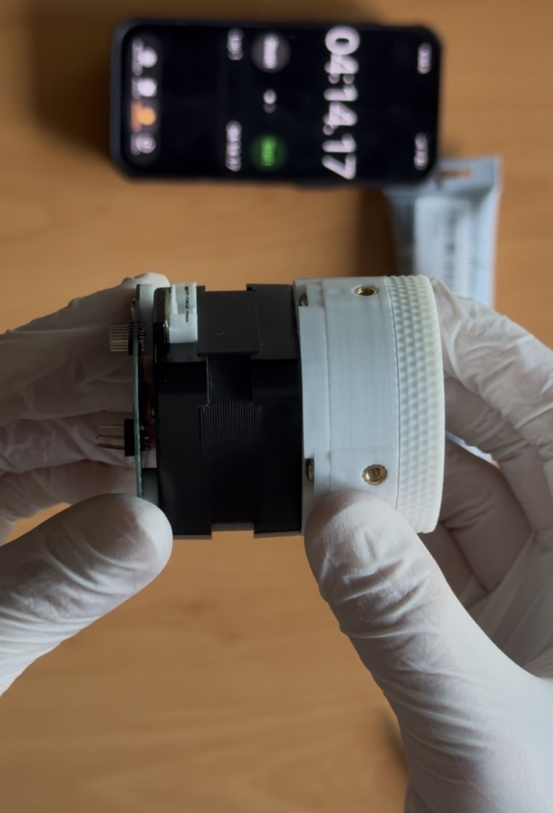

<actuator/> · v1.0 (RevB)
HDP30
A 3D-printable 30:1 harmonic drive that bolts onto any standard NEMA 17 stepper. Half again the reduction of our HD20, in a thinner stack, off the same $4 of hardware.
Free and open under CC BY-SA 4.0. Build it, change it, sell it. Just credit us and share alike.

If you need a drive with data behind it today, build the HD20 instead. It's archived, but it's measured.
<how-it-works/>
Three parts do the work. A wave generator, an ellipse riding on eleven loose 5 mm balls in a printed cage, pushes a flexible toothed ring (the flexspline) into an oval, so its teeth engage a rigid circular spline at only two points. The circular spline has two more teeth than the flexspline, so a full turn of the motor walks the output around by just two teeth. With a 60-tooth flexspline, that tiny slip per revolution is the 30:1.
New to strain wave gearing? We wrote a plain-language explainer. And every tooth profile in this drive came out of our own free harmonic maker, including the exact settings used here, which you can open and edit.
<what-changed/>
The HD20 got 20:1 out of a 40-tooth flexspline at module 0.8. The HDP30 keeps the same two-tooth difference but packs in 60 teeth at module 0.55, which buys half again the reduction at roughly the same pitch diameter, and lets the whole stack get thinner. Hence pancake.
Six parts were re-cut for the new profile: the flexspline, both circular splines, the wave generator, the ball cage and the output preloader. The interface plate, the base preloader and the shear pins are unchanged, and so is every piece of hardware: same eleven balls, same 30 × 42 × 7 bearing, same eight screws, same twelve inserts. If you've already built an HD20, your leftovers cover this one.
What you give up is the test data. The HD20 is the measured design; the HDP30 is the newer one. That's the whole trade.
<specs/>
| Reduction | 30:1 |
|---|---|
| Tooth profile | Cycloidal, module 0.55, 60-tooth flexspline against a 62-tooth circular spline |
| Measured torque | not yet measured |
| Efficiency | not yet measured |
| Backlash | not yet measured |
| Motor | Any NEMA 17 with a 5 mm shaft. The interface plate is unchanged from the HD20, which was validated with an OMC StepperOnline 17HE12-1204S: 42 × 42 × 30 mm, 26 N·cm, 1.2 A, 4-wire. |
| Lubrication | Super Lube synthetic PTFE grease |
| Printed parts | 10 pieces across 9 unique parts, including 2 shear pins |
| Fasteners | 8 × M3×0.5 × 6 mm button head screws per drive |
| Materials | PLA throughout, PETG for the flexspline |
| Version | v1.0 (RevB), 30 August 2026 |
| License | CC BY-SA 4.0 |
<what-you-need/>
Beyond the bill of materials below, you supply:
- A NEMA 17 stepper with a 5 mm shaft. The mounting face is identical to the HD20's, which we ran with an OMC StepperOnline 17HE12-1204S (26 N·cm, 1.2 A) under closed-loop FOC control.
- 4 × M3 screws to bolt the motor to the interface plate. These are separate from the 8 × M3×0.5 × 6 mm screws that hold the drive itself together, which are in the bill of materials.
- A soldering iron for the heat-set inserts, and hex keys.
- PLA for everything, and PETG for the flexspline.
- Super Lube on the wave generator and the tooth mesh. It's in the bill of materials below. Don't run it dry.
<bill-of-materials/>
Unchanged from the HD20. We checked that part by part against the CAD rather than assuming it: the cage has the same eleven ball pockets, and every screw bore and insert boss lines up one for one.
loading the bill of materials…
<printed-parts/>
| Part | Qty | Material |
|---|---|---|
| Circular spline (base) | 1 | PLA |
| Circular spline (output) | 1 | PLA |
| Base preloader | 1 | PLA |
| Output preloader | 1 | PLA |
| Interface / motor mount | 1 | PLA |
| Wave generator | 1 | PLA |
| Ball cage | 1 | PLA |
| Flexspline | 1 | PETG |
| Shear pin | 2 | PLA |
Both shear pins are required, and they're the same part printed twice, so there's only one file to download. They carry shear load across the output joint directly, so the connection doesn't have to rely on friction from the preloaded screws to resist it. The screws clamp; the pins take the sideways load.
Print settings
No custom temperatures and no special bed prep. The HD20 was printed on a Bambu Lab P1S with Bambu PLA (and PETG for the flexspline), and the HDP30 uses the same settings: the Arachne variable-width wall generator and one extra wall loop for strength.
Two things are not the default. The output circular spline and the interface both need supports; everything else prints unsupported. And we set seam position to random on all parts, so a single seam line doesn't stack up into a weak spot or a visible ridge on the round surfaces.
<the-files/>
Everything lives in scar8969/drive.magic. Grab the packaged bundles from the releases page. The STEP files are large, so you probably don't want to clone the whole repo.
Slice the STEP with the print settings above, so the geometry you print is always the current one.
<assembly/>
📹 the proper build video is in the works
A full, properly paced walkthrough is being filmed now and will be posted to youtube.com/@robrotics and embedded right here. Written step-by-step instructions are being put together alongside it.
<known-behaviour/>
The HDP30 hasn't been characterised yet, so this section is explicit about where each item comes from. Read it before you conclude you assembled it wrong.
Applies to this drive
- PLA creeps under sustained load. Holding a heavy static load for hours will slowly deform the circular splines.
- Unit-to-unit variation is real. Two HD20s of the same design differed by up to 18% at the same current. Printed gearboxes are not precision parts, and smaller teeth won't make that better.
- Output spline preload is the biggest tuning knob. On the HD20, tightening it further took one unit from 2.37 to 2.55 N·m. Expect it to matter here too.
- Torque drops after running in. One HD20 measured 2.32 N·m fresh and 2.08 N·m after further running. Plan around the run-in figure, not the fresh one.
Not yet known for this drive
Torque, efficiency, backlash, thermal behaviour, and whether the module 0.55 teeth hold up as well as the 0.8 teeth under load. That last one is the open question this revision exists to answer.
Hit something we haven't listed? Please open an issue and tell us your version, filament and printer.
<test-data/>
None yet. The load cell rig that produced the HD20's report hasn't been run against this revision. When it has, the report gets linked here.
If you build one and measure it before we do, please open an issue with your setup and your numbers. We'll credit you on this page.
read the HD20 report instead →<make-your-own/>
Two ways in, depending on how deep you want to go.
Change the tooth profile. This link opens our free harmonic maker loaded with the exact settings used for the HDP30, so you can nudge one number and export a new DXF.
open the HDP30 profile in the harmonic maker →Change the mechanics. The full parametric model is public on Onshape. Copy it into your own workspace and change whatever you like: a different motor face, a different output interface, a different ratio. If you build a variant we would genuinely like to see it: open an issue on the repo or tag @robrotics.
open the model in onshape →